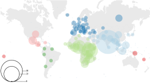
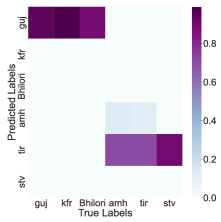

LIMIT: Language Identification, Misidentification, and Translation using Hierarchical Models in 350+ Languages
Abstract
Knowing the language of an input text/audio is a necessary first step for using almost every NLP tool such as taggers, parsers, or translation systems. Language identification is a well-studied problem, sometimes even considered solved; in reality, due to lack of data and computational challenges, current systems cannot accurately identify most of the world's 7000 languages. To tackle this bottleneck, we first compile a corpus, MCS-350, of 50K multilingual and parallel children's stories in 350+ languages. MCS-350 can serve as a benchmark for language identification of short texts and for 1400+ new translation directions in low-resource Indian and African languages. Second, we propose a novel misprediction-resolution hierarchical model, LIMIT, for language identification that reduces error by 55% (from 0.71 to 0.32) on our compiled children's stories dataset and by 40% (from 0.23 to 0.14) on the FLORES-200 benchmark. Our method can expand language identification coverage into low-resource languages by relying solely on systemic misprediction patterns, bypassing the need to retrain large models from scratch.111Data, code, and models are publicly available on GitHub under permissive licenses. Repository: https://github.com/magarw/limit
1 Introduction

Building natural language processing (NLP) tools like machine translation, language identification, part of speech (POS) taggers, etc. increasingly requires more and more data and computational resources. To attain good performance on a large number of languages, model complexity and data quantity must be increased. However, for a majority of the world's 7000 languages, large amounts of data are often unavailable which creates a high barrier of entry Blasi et al. (2022); Joshi et al. (2020); Khanuja et al. (2023). Increasing model complexity for large-scale models also requires disproportionate amount of computational resources, further disincentivizing researchers to work towards including these languages in modern NLP systems.
A popular data collection approach is large-scale web mining Tiedemann and Nygaard (2004); Bañón et al. (2020); Schwenk et al. (2021b), where large parts of the internet are scoured to find training data for data-hungry NLP algorithms. When faced with a sentence or phrase, such algorithms must know how to reliably sort this text into the appropriate language bucket. Since the web is replete with content in a variety of languages, a model needs to recognize text in a sufficiently large number of these languages with high accuracy. Identifying parallel bitext is even more demanding as a machine translation system must also be available to correctly identify and align parallel data Vegi et al. (2022); Kunchukuttan et al. (2018). This data-collection paradigm becomes inaccessible for low-resource languages because high-quality translation models usually require substantial amounts of parallel data for training, which is often unavailable. Without high-quality language identification and translation system, it becomes practically impossible to mine the internet for relevant text during such collection efforts. Additionally, mispredictions by language identification and data collection algorithms can increase inter-class noise, reducing the crawled data's quality, and harming performance in downstream tasks without strong quality evaluation metrics Kocyigit et al. (2022).
How can we address these challenges and build high-quality identification and translation for low-resource languages?
Resource Creation
Highlighting the need for resource creation in low-resource languages, we first share a new parallel children's stories dataset, MCS-350, created using two resources: African Storybooks Initiative222https://www.africanstorybook.org/ and Indian non-profit publishing outfit Pratham Books' digital repository Storyweaver333https://storyweaver.org.in/ (available under permissive Creative Commons licenses). The combined dataset includes original and human-translated parallel stories in over 350 languages (visualized in Figure 1) and we merge, preprocess, and structure it so it is easily utilizable by NLP researchers for training and benchmarking (§2).
Machine Translation
Armed with parallel stories in many low-resource African and Indian languages, we tackle machine translation in resource-constrained situations next. If we aim to collect parallel data in low-resource languages, language identification itself is insufficient and we need high-quality translation models as well. We utilize a pre-trained multilingual translation model Alam and Anastasopoulos (2022) and explore training with hierarchical language-level and language family-level adapter units to translate children's stories at the page level (§3).
Language Identification
Finally, we take on the biggest bottleneck in low-resource language data collection efforts - language identification. We propose LIMIT - a misidentification-based hierarchical modeling approach for language identification, that utilizes data and computational resources efficiently and shows cross-domain generalization. The proposed approach is exciting because unlike previously published language identification models like AfroLID Adebara et al. (2022), CLD3 Salcianu et al. (2020) and Franc444https://github.com/wooorm/franc/, LIMIT avoids training large multilingual models for a new set of languages and still outperforms existing systems. Large multilingual models often require thousands of sentences for training, ex. AfroLID Adebara et al. (2022) collects and trains on over 4000 sentences per language. On the other hand, for many low-resource languages in India and Africa, we may not even be able to collect 1000 sentences at first 2. Also, in contrast with other recent work in hierarchical language identification Goutte et al. (2014); Lui et al. (2014); Bestgen (2017); Jauhiainen et al. (2019), our work stands out because it accounts for mispredictions made by existing trained models. Unlike other work, it does not predict a group/language family first, but rather directly learns confusion relationships between language pairs (which may not be from the same language family). By leveraging hierarchically organized units on top of a root model, we avoid complete retraining, saving computational resources, while increasing coverage into many new and understudied languages and language pairs (especially those between two low-resource languages) (§4).
To summarize, our main contributions are:
-
1.
We compile MCS-350, a dataset of 50K+ parallel children's stories from African Storybooks Initiative and Storyweaver in 350+ languages (§2).
-
2.
We share a machine translation benchmark enabling translation evaluation in more than 1400 new translation directions (§3).
-
3.
We propose LIMIT, a misidentification-based hierarchical model, that can use limited data to better identify low-resource languages (§4).
2 MCS-350 Data Curation
| Family | Languages | Sentences |
|---|---|---|
| Niger-Congo | 129 | 142605 |
| Indo-European | 84 | 169823 |
| Nilo-Saharan | 22 | 23204 |
| Sino-Tibetan | 21 | 19264 |
| Austronesian | 18 | 28096 |
| Afro-Asiatic | 15 | 20266 |
| Dravidian | 13 | 35638 |
| Austro-Asiatic | 10 | 22989 |
We identify two large-scale parallel repositories - African Storybooks Initiative and Pratham Books' Storyweaver, both under permissive Creative Commons Licenses, with their storybooks available for non-commercial and research use. African Storybooks Initiative hosts parallel translated and human-verified children's stories in over 200 African languages. Pratham Books is a non-profit Indian publisher that aims to increase literacy of children and adults alike in Indian languages. Their digital repository, Storyweaver, publishes parallel translated stories in 300+ languages. This includes not only Indian languages but also African, European, and Indigenous languages from the Americas.
2.1 Parallel Dataset
We collect stories through a mix of web scraping and public APIs, preprocess them to remove mismatched/incorrect text, extract monolingual text for language identification and parallel text for machine translation. We maintain metadata about authors, translators, illustrators, reading level, parallel translations, and copyrights for each story. We remove stories that are either empty or those from non-English languages that have over 50% pages containing majority English text with 90% confidence using langdetect Nakatani (2010). This leaves us with 52K stories.
Note that both African Storybooks Initiative and Pratham Storyweaver human verify stories and language. However, there are several abandoned translation projects and completed but unverified stories that need automated checking. Therefore, our preprocessing is meant for unverified stories, and may introduce noise in the collected data. By improving the preprocessing filters, we can likely further improve the quality of the unverified stories in the corpus. Collected stories in the pre-merge stage are available with their associated metadata in the repository.
| Dataset | New languages | New pairs |
|---|---|---|
| Microsoft | 67 | 2835 |
| FLORES-200 | 51 | 1449 |
| OPUS | 82 | 2853 |
| Script | Languages | Examples |
|---|---|---|
| Devanagari | 38 | Hindi, Marathi |
| Cyrillic | 14 | Russian, Bulgarian |
| Arabic | 8 | Arabic, Persian |
| Tibetan | 3 | Tibetan, Ladakhi |
| Telugu | 3 | Telugu, Konda |
| Odia | 3 | Odia, Ho, Kui |
2.2 Multilingual Documents
MCS-350 contains multilingual stories with language identifiers denoted by for a story multilingual in and . Such stories include text in multiple languages within the same page. Text may be code-mixed or consecutively presented. To extract as many parallel sentences as possible to support vulnerable languages and also create new translation directions, we employ string-similarity based matching to identify the segments corresponding to the high-resource language in the pair, and therefore automatically generating parallel sentences from 10K pages across 52 languages. E.g., through this process, we extracted 1000+ sentences in Kui (0 sentences pre-extraction), a minority Dravidian language with about 900K native speakers. We manually verified all extracted monolingual text after using string matching on multilingual stories.
2.3 Language Varieties/Lects
We attempt to separate language varieties/lects into unique prediction classes if there is sufficient training data for them ( sentences). If an ISO code is unavailable for the lect, we assign a class name with the ISO code and the subdivision specified as: iso_subdivision. For instance, we separated Gondi's South Bastar lect (gon_bastar, 4000+ sentences) from the generic language code for Gondi (gon). For fair evaluation and comparison, we provide manual mappings for any non-standard identifiers from the output space of various language identification tools. Lects with too little data are merged into their parent language, e.g., ``Bangla (Bangladesh)'' merged into ``Bengali''.
| Model | ||||||
|---|---|---|---|---|---|---|
| Baseline | 11.87 | 10.19 | 18.79 | 13.20 | 15.64 | 12.55 |
| (6.31) | (5.06) | (7.75) | (8.19) | (5.22) | (5.81) | |
| L-Fine | 19.52 | 18.21 | 30.38 | 17.46 | 21.93 | 17.86 |
| (10.33) | (10.06) | (13.63) | (8.46) | (4.87) | (6.86) | |
| F-Fine | 24.93 | 23.58 | 35.66 | 25.26 | 27.06 | 21.36 |
| (11.74) | (11.31) | (14.36) | (13.72) | (6.00) | (7.32) | |
| Unique Pairs | 88 | 58 | 16 | 16 | 14 | 14 |
| Lang Pair | Lang Pair | ||
|---|---|---|---|
| eng-xho | 20.1 | eng-hau | 18.8 |
| fra-lug | 3.6 | nso-lug | 3.0 |
| lug-kin | 2.9 | kin-lug | 2.4 |
| nya-lug | 2.1 | eng-kam | 1.8 |
| ibo-lug | 1.7 | eng-lug | 1.5 |
| zul-lug | 1.5 | fra-tso | 1.3 |
| xho-lug | 1.2 | fra-yor | 1.1 |
| nso-tso | 1.0 | amh-lug | 1.0 |
2.4 Data Overview
MCS-350 covers over 350 languages from a diverse pool of language families. In Table 1, we share the number of languages and the number of sentences in each language family in the dataset. The data is roughly evenly split between stories from the large Niger-Congo and Indo-European language families, with a sizeable minority in other language families like Nilo-Saharan, Sino-Tibetan, Austronesian, Dravidian, Creole, etc. About 70% of the dataset's languages use the Latin script or its extended variants with diacritics. However, the data is still quite typographically rich, and stories with non-Latin scripts are in abundance, enumerated in Table 3.
Compared to highly multilingual translation benchmarks like NTREX (parallel data of 128 languages; Federmann et al., 2022), FLORES-200 (-way, 200 languages; NLLB Team et al., 2022), or OPUS-100 (parallel data for 99 languages to/from English; Aharoni et al., 2019), our benchmark introduces up to 82 new languages leading to more than 1400 new language pairs (see Table 2).
3 Machine Translation Benchmark
While it is true that resource creation in low-resource languages requires fine-grained and high-quality language identification, collecting parallel data additionally requires high-quality MT (§1). In this section, we explore phylogeny-based hierarchical adapter units to improve translation quality between two African languages, and between African languages and English/French.
3.1 Data
We exploit the parallel nature of children's stories in MCS-350 and ensure that all training stories are separate from test ( pages) stories. This is done to get a more realistic estimate of translation quality on new stories. For languages with pages across stories, we use 500-page test sets.
| Model | Supported | Common | Total (with LIMIT) | |
|---|---|---|---|---|
| CLD3 Salcianu et al. (2020) | 0.11 | 101 | 81 | 376 |
| langid.py Lui and Baldwin (2012) | 0.09 | 97 | 73 | 380 |
| Franc555https://github.com/wooorm/franc/ | 0.18 | 369 | 116 | 609 |
| fastText Joulin et al. (2017) | 0.10 | 176 | 117 | 415 |
| HeLI-OTS Jauhiainen et al. (2022a) | 0.13 | 200 | 81 | 475 |
3.2 Experimental Settings
As our baseline, we used the model from Alam and Anastasopoulos (2022), which is the best-performing publicly available model from the WMT Shared Task on Large Scale Evaluation for African Languages Adelani et al. (2022).666Ranked third in the Shared Task. Top two systems were industry submissions that are not publicly available. They first fine-tuned the DeltaLM777https://aka.ms/deltalm model Ma et al. (2021) in 26 languages. After that, they added lightweight language-specific adapter layers Pfeiffer et al. (2022) and fine-tuned only the adapters in those 26 languages. We can either use a single adapter per language (L-Fine) or organize the adapters in a phylogenetically-informed hierarchy (F-Fine) so that similar languages share language-family and genus-level adapters Faisal and Anastasopoulos (2022). We perform both L-Fine and F-Fine experiments using the publicly available code 888https://github.com/mahfuzibnalam/large-scale_MT_African_languages and also share an additional baseline by finetuning the DeltaLM model without adapters. Details on phylogenetic trees and reproducibility are in Appendix §A.3.
3.3 Evaluation
In Table 4, we show the performance of our L-Fine and F-Fine models compared to the baseline on our test set. We evaluate using three well-known MT metrics: BLEU Papineni et al. (2002), CHRF++ Popović (2017), and spBLEU NLLB Team et al. (2022). For spBLEU, we use the FLORES200 SPM model to create subwords.
Based on all three metrics, our L-Fine model outperforms the Baseline model consistently by 4.0-11.5 spBLEU points by just fine-tuning with language-specific adapters. Our F-Fine model outperforms the L-Fine model by 5.0-7.5 spBLEu points by fine-tuning only some shared parameters among languages and language-specific adapters. We also test our models on a public benchmark, FLORES200 (Appendix §B), and observe that due to the domain shift, L-Fine and F-Fine models under-perform the Baseline.
Despite this domain shift, several low-resource language pairs benefit from adapter fine-tuning across domains. We report these language pairs and their respective spBLEU gains for the F-Fine model in Table 5. We get the highest gains for English-Xhosa (20.1 points) and English-Hausa (18.8 points) across domains, both of which had poor performance from the Baseline model with spBLEU of 3.5 and 4.5, respectively. We also notice cross-domain improvement in some translation directions involving two African languages such as Ganda-Kinyarwanda (2.9 points) and Northern Sotho-Ganda (3.0 points). Exhaustive results for other language pairs can be found in Appendix §B.
4 Language (Mis)Identification Benchmark
Language identification (LID) affects low-resource language resource creation efforts severely Jauhiainen et al. (2019); Schwenk et al. (2021a) because to collect data, we need accurate language identifiers that themselves need high-quality data to trainBurchell et al. (2023) , creating a vicious cycle. Low-quality systems often make mispredictions which increases inter-class noise and reduces the crawled data's quality Kocyigit et al. (2022); Burchell et al. (2023) both for the predicted language and the true language. To correct mispredictions and improve accuracy in supported languages with limited data, we propose a hierarchical modeling approach.
Hierarchical modeling is an extremely popular choice for a wide variety of algorithmic tasks and it has been explored for language identification as well Goutte et al. (2014); Lui et al. (2014); Bestgen (2017); Jauhiainen et al. (2019). However, previous work has focused on predicting language group/family first, followed by finer-grained predictions with a smaller set of classes. Our work departs from this paradigm in two ways - first, we bring focus onto expanding language identification coverage in pre-trained or off-the-shelf systems without retraining, and second, we predict a prior and posterior language based on confusion and misprediction patterns of the model directly (without predicting language family/group first).
 |
Under our technique, we first choose a well-performing root model with high-coverage that provides us with the base/prior prediction. Such base predictions are obtained for a sample of MCS-350's training set, allowing us to identify systemic confusion patterns embedded within the model using a confusion matrix. Based on the identified misprediction patterns (which may or may not be between languages in the same family), we train lightweight confusion-resolution subunits that can be attached onto the root model to make the posterior prediction. Our results show that, with this architecture, a small sample of data is sufficient to investigate pretrained, off-the-shelf, or blackbox commercial models and identify systemic misprediction patterns across domains.
4.1 Experimental Settings
Wide-Coverage root Model
To pick an appropriate root model to test our misidentification-based hierarchical approach, we compare several state-of-the-art pre-trained models (§4.2) and choose the system with the highest macro- score, giving equal importance to all languages in MCS-350.
Traditional Hierarchical group-first Model
Classical hierarchical models predict language family/group first, followed by the specific language Goutte et al. (2014); Lui et al. (2014); Bestgen (2017); Jauhiainen et al. (2019). These groups often have phylogenetic backing and are not learned through the output distribution of the root model. For benchmarking, we train this traditional hierarchical group model as well (Table 7).
N-Way Multilingual multi Model
To contrast our work with typical large multilingual modeling where there is no architectural class hierarchy, we train a large fastText multilingual model with all 350+ languages (multi). With a large number of classes, we know that low-resource languages suffer due to class imbalance, even with upsampling. But, we still include performance results from multi in Table 7 to compare it with the two hierarchical approaches.
LIMIT's Confusion-resolution Units
We use fastText Joulin et al. (2017) to train small models that will specialize in distinguishing between 2-3 highly-confused languages each.999embedding dim= 100, learning rate= 0.5, loss= negative sampling. We explored several starting learning rates and settled on lr=0.5 due to optimal performance on a small sampled dev set. FastText’s lrUpdate parameter, by default, reduces the starting learning rate gradually over epochs. We don’t optimize for embedding dimension and use fastText’s default, 100, for supervised training. Up to 1000 sentences/language are used for training, and 100 randomly selected sentences across stories are reserved as the final test set. We train our own embeddings because existing multilingual embeddings Devlin et al. (2019) are not trained on sufficiently wide low-resource language data.
| MCS-350 (LIMIT's Domain) | FLORES-200 (Out-of-Domain) | |||||||
| Lang | root | multi | group | LIMIT | root | multi | group | LIMIT |
| {forest} for tree= s sep'=1.8mm, grow'=0, child anchor=west, parent anchor=east, anchor=west, calign=first, inner xsep=1pt, inner ysep=0.5pt, forked edges, edge path= [draw, \forestoptionedge] (!u.south west) +(7.5pt,0) |- (.child anchor) \forestoptionedge label; , before typesetting nodes= if n=1 insert before=[,phantom] , fit=band, before computing xy=l=15pt, [guj [kfr] [bhil] ] | 0.49 | 0.44 | 0.58 | 0.63 | 1.00 | 0.81 | 0.99 | 0.99 |
| 0.78 | 0.83 | 0.80 | ||||||
| 0.63 | 0.03 | 0.28 | ||||||
| amh | 0.20 | 0.81 | 0.78 | 0.83 | 0.60 | 0.95 | 0.93 | 0.99 |
| {forest} for tree= s sep'=1mm, grow'=0, child anchor=west, parent anchor=east, anchor=west, calign=first, inner xsep=1pt, forked edges, edge path= [draw, \forestoptionedge] (!u.south west) +(7.5pt,0) |- (.child anchor) \forestoptionedge label; , before typesetting nodes= if n=1 insert before=[,phantom] , fit=band, before computing xy=l=15pt, [tir [stv] ] | 0.56 | 0.93 | 0.94 | 0.85 | 0.99 | 0.96 | 0.95 | 0.95 |
| 0 | 0 | 0 | ||||||
| {forest} for tree= s sep'=1.8mm, grow'=0, child anchor=west, parent anchor=east, anchor=west, calign=first, inner xsep=1pt, inner ysep=1.5pt, forked edges, edge path= [draw, \forestoptionedge] (!u.south west) +(7.5pt,0) |- (.child anchor) \forestoptionedge label; , before typesetting nodes= if n=1 insert before=[,phantom] , fit=band, before computing xy=l=15pt, [ben [asm] [cdz] ] | 0.47 | 0.82 | 0.05 | 0.85 | 1.00 | 0.94 | 0.96 | 0.99 |
| 0.63 | 0.89 | 0.89 | 0.00 | 0.98 | 0.96 | 0.66 | ||
| 0.57 | 0.87 | 0.93 | ||||||
| {forest} for tree= s sep'=1.5mm, grow'=0, child anchor=west, parent anchor=east, anchor=west, calign=first, inner xsep=1pt, forked edges, edge path= [draw, \forestoptionedge] (!u.south west) +(7.5pt,0) |- (.child anchor) \forestoptionedge label; , before typesetting nodes= if n=1 insert before=[,phantom] , fit=band, before computing xy=l=15pt, [zho [yue] ] | 0.61 | 0 | 0 | 0.68 | 0.99 | 0 | 0.01 | 0.99 |
| 0 | 0.02 | 0.14 | 0.00 | 0 | 0 | 0.00 | ||
| {forest} for tree= s sep'=1.1mm, grow'=0, child anchor=west, parent anchor=east, anchor=west, calign=first, inner xsep=1pt, forked edges, edge path= [draw, \forestoptionedge] (!u.south west) +(7.5pt,0) |- (.child anchor) \forestoptionedge label; , before typesetting nodes= if n=1 insert before=[,phantom] , fit=band, before computing xy=l=15pt, [tel [kfc] ] | 0.92 | 0.75 | 0.80 | 0.94 | 1.00 | 0.83 | 0.91 | 1.00 |
| 0.66 | 0.66 | 0.66 | ||||||
| {forest} for tree= s sep'=1.1mm, grow'=0, child anchor=west, parent anchor=east, anchor=west, calign=first, inner xsep=1pt, forked edges, edge path= [draw, \forestoptionedge] (!u.south west) +(7.5pt,0) |- (.child anchor) \forestoptionedge label; , before typesetting nodes= if n=1 insert before=[,phantom] , fit=band, before computing xy=l=15pt, [kan [kfa] ] | 0.70 | 0.77 | 0.78 | 0.81 | 1.00 | 0.96 | 0.93 | 0.99 |
| 0.66 | 0.68 | 0.52 | ||||||
| {forest} for tree= s sep'=1.2mm, grow'=0, child anchor=west, parent anchor=east, anchor=west, calign=first, inner xsep=1pt, forked edges, edge path= [draw, \forestoptionedge] (!u.south west) +(7.5pt,0) |- (.child anchor) \forestoptionedge label; , before typesetting nodes= if n=1 insert before=[,phantom] , fit=band, before computing xy=l=15pt, [tso [tsc] ] | 0.49 | 0.53 | 0.34 | 0.67 | 0.97 | 0.79 | 0.72 | 0.97 |
| 0.74 | 0.52 | 0.77 | ||||||
| {forest} for tree= s sep'=1.3mm, grow'=0, child anchor=west, parent anchor=east, anchor=west, calign=first, inner xsep=1pt, forked edges, edge path= [draw, \forestoptionedge] (!u.south west) +(7.5pt,0) |- (.child anchor) \forestoptionedge label; , before typesetting nodes= if n=1 insert before=[,phantom] , fit=band, before computing xy=l=15pt, [dagaare [mzm] ] | 0.83 | 0.48 | 0.54 | 0.87 | ||||
| 0.69 | 0.88 | 0.82 | ||||||
| {forest} for tree= s sep'=1.1mm, grow'=0, child anchor=west, parent anchor=east, anchor=west, calign=first, inner xsep=1pt, forked edges, edge path= [draw, \forestoptionedge] (!u.south west) +(7.5pt,0) |- (.child anchor) \forestoptionedge label; , before typesetting nodes= if n=1 insert before=[,phantom] , fit=band, before computing xy=l=15pt, [kat [bbl] ] | 0.66 | 0.46 | 0.42 | 0.80 | 1.00 | 0.72 | 0.70 | 1.00 |
| 0.82 | 0.66 | 0.66 | ||||||
| avg | 0.29 | 0.56 | 0.47 | 0.68 | 0.77 | 0.70 | 0.73 | 0.86 |
Evaluation Metric
To select a root model, performance is compared based on aggregated macro- scores across languages (Table 6). To compare the performance of the root model and LIMIT (our proposed approach) on MCS-350, our benchmark dataset, and the existing FLORES-200 benchmark, we report language-level scores (Table 7).
4.2 Pre-trained root Models
In Table 6, we show macro- scores across all 350+ languages for popular pretrained identification systems like Google's CLD3, Langid.py, Franc, fastText Joulin et al. (2017), and HeLI-OTS Jauhiainen et al. (2022a). Franc, built using the Universal Declaration of Human Rights (UDHR) data, comes out with the best macro-, covering % of our languages ( languages). It is derived from guess-language101010https://github.com/kent37/guess-language which uses a mix of writing system detection and character-level trigrams. Hence, we use Franc as the root system for our misprediction-based hierarchical modeling experiments. The overall low scores on human-written sentences in MCS-350 (all systems achieve an score ) are worth noting, and indicate that off-the-shelf systems ultimately tend to perform really well only on some languages, despite officially supporting hundreds of languages.
4.3 Language (Mis)identification
Next, we inspect the best-performing root model's confusion matrix on MCS-350's training set (a representative example is shown in Figure 4) to understand and identify misprediction patterns. For each test language, we divide the root model's predictions by the total number of tested examples giving us a hit ratio for each pair. E.g., (Gujarati, Kutchi) would represent the ratio of Kutchi sentences that were misidentified as Gujarati. Upon inspection of the confusion matrix, we identified the following 9 clusters with a high confusion ratio (). According to our experimental approach outlined in §4.1, we train a lean fastText classifier for each of these clusters, that will specialize in differentiating between these highly-confused languages:
-
1.
Gujarati, Kutchi, Bhilori
-
2.
Amharic, Tigrinya, Silt'e
-
3.
Koda, Bengali, Assamese
-
4.
Mandarin, Yue Chinese
-
5.
Konda, Telugu
-
6.
Kodava, Kannada
-
7.
Tsonga, Tswa
-
8.
Dagaare, Mumuye
-
9.
Bats, Georgian
4.4 Expanded Language Coverage
We report scores for each of the 9 highly confused clusters' languages (Table 7) and observe that languages in each cluster share writing systems and are often phylogenetically related. Our misidentification-based model, LIMIT, is successful at improving scores on both our newly collected MCS-350 dataset as well as the public benchmark, FLORES-200. On MCS-350, LIMIT improves scores from to , a 55% error reduction. Of the multidomain data available in FLORES-200 (11/21 languages), LIMIT improves from 0.77 to 0.86, a 40% error reduction, demonstrating that our method's utility is not restricted to the training data's domain.
Note that hierarchical modeling could be viewed as further complicating a simple root model, but we contend that this is valuable when retraining is not an option due to lack of data, closed-source code, etc (Section 5). This simple extension allows us to extend a high-coverage root model to newer languages or domains that have small amounts of training data, while maintaining high-quality predictions. Furthermore, our hierarchical method LIMIT also outperforms a system multi that is trained on all the languages in the test set.
4.5 Sentence Length and Domain
For several languages like Gujarati, Amharic, Bengali, and Mandarin, low scores for MCS-350 compared to high scores on FLORES-200 indicate that shorter texts in the children's stories domain are much harder to identify. This is expected due to limited feature signals in shorter texts but it is worth noting that that is the opposite of our findings in the machine translation task (§3.3), where translating shorter texts in MCS-350 proved easier than translating FLORES-200 data. Our misprediction-based hierarchical is not only easier to train with limited data, but also brings valuable cross-domain language identification improvements.
5 Related Work
5.1 Parallel Datasets
Language identification models tend to use popular training datasets like UDHR Vatanen et al. (2010), Blodgett et al. (2017) for social media, King and Abney (2013) (web-crawl in 30 languages), FLORES-200, JW-300 Agić and Vulić (2019) (multilingual articles from Jehovah's Witness' website) etc.
A recently published dataset, BLOOM Leong et al. (2022), leverages text and audio in children's stories from similar sources (African Storybooks, The Asia Foundation, Little Zebra Books etc.) to create benchmarks for image captioning and speech recognition. However, their data is monolingual, unaligned, and cannot be used for machine translation. We leveraged the highly parallel nature of the collected storybooks, five times the number of stories in BLOOM, and created test sets and baselines for understudied translation directions.
It is also important to us to avoid representation washing Caswell et al. (2020) and we clearly highlight the sources of noise from unverified stories in our merged dataset. With stricter preprocessing filters applied at the pre-merge stage, a 'cleaner' dataset could be produced, like in Burchell et al. (2023). We provide access to our data at all such timesteps in the preprocessing pipeline so researchers are not required to use the final dataset, but may use an earlier raw version and preprocess it themselves according to their needs.
5.2 Machine Translation
Thousands of languages are spoken worldwide, so representing them with bilingual models would require thousands of models. Neither scalability nor adaptability makes this an ideal solution. Through various training methods Aharoni et al. (2019); Wang et al. (2020), model structures Wang et al. (2018); Zhang et al. (2021), and data augmentation Tan et al. (2019); Pan et al. (2021) a variety of research has attempted to improve multilingual translation models. Adapter units were initially proposed for light-weight domain adaptation Vilar (2018) and then also for extending large pre-trained models to a downstream tasks and using bilinugal adapters Houlsby et al. (2019); Bapna and Firat (2019).
5.3 Language Identification
Text-based language identification is usually modelled as a classification task. By increasing the number of languages a classifier must predict, average accuracy generally tends to decrease Jauhiainen et al. (2017), a problem we propose to tackle by leveraging a misprediction-based hierarchical approach. To distinguish between closely related languages, a lot of exciting research has been published at various editions of VarDial - The Workshop on NLP for Similar Languages, Varieties and Dialects Aepli et al. (2022); Scherrer et al. (2022); Chakravarthi et al. (2021); Zampieri et al. (2020, 2014).
Over the last 3 iterations of VarDial from 2019-2022, many new datasets and techniques to identify Romance languages Jauhiainen et al. (2022b); Zaharia et al. (2021), Nordic languages Haas and Derczynski (2021), Uralic languages Jauhiainen et al. (2020), German lects Mihaela et al. (2021); Siewert et al. (2020), and the Slavic language continuum Popović et al. (2020); Abdullah et al. (2020) were published. In contrast, we see only a handful papers and tasks on Indian languages at the venue with 2 focusing on Indo-Aryan and 2 focusing on Dravidian languages Nath et al. (2022); Bhatia et al. (2021); Jauhiainen et al. (2021); Chakravarthi et al. (2020), and no papers or tasks, to our knowledge, on African languages. Outside the venue, recently published models like AfroLID Adebara et al. (2022) for language identification and IndicTrans2 AI4Bharat et al. (2023) for Indic-language translation are great large-scale efforts in the low-resource language space.
Brown (2014), a notable technique, trains richer embeddings with non-linear mappings and achieves substantial improvements in downstream language identification on 1400+ languages. However, we do not benchmark with this technique because the paper does not contain any experiments in low-resource training setups. Training data is about 2.5 million bytes/language, while we are working with <50K bytes/language. Therefore, exploring non-linear embedding mappings in low-resource settings Brown (2014) is left for future work.
5.4 Hierarchical Modeling
Hierarchical approaches have proved successful in solving a myriad of computational problems, and have proved useful in language identification previously. The widely used approach first predicts a preliminary language group/family, and then another fine-tuned prediction from a smaller set of output classes contained within the language group/family Goutte et al. (2014); Lui et al. (2014); Bestgen (2017); Jauhiainen et al. (2019). In contrast, our work extends architecture to account for mispredictions made by existing trained models, and does not predict a group/language family first, but rather directly learns confusion relationships between language pairs. Then, similar to Bestgen (2017); Goutte et al. (2014), we train smaller classifiers for a fine-tuned posterior prediction. However, our approach departs from their paradigm in that our classifiers may also distinguish between highly-confused languages which belong to different language families.
6 Conclusion
In this work, we tackle the lack of resources for many of the world's languages and release a large, massively parallel children's stories dataset, MCS-350, covering languages from diverse language families, writing systems, and reading levels. Since translation is crucial for parallel resource creation, we explore adapter-based networks fine-tuned on a phylogenetic architecture, and utilize MCS-350 to create new translation benchmarks for vulnerable and low-resource languages. We demonstrate large improvements in the children's story domain and cross-domain improvement for several language pairs (on the FLORES benchmark dataset). On the algorithmic front, we introduce LIMIT, a hierarchical, misprediction-based approach to counter the inaccuracies of pre-trained language identification systems. Our method increases language coverage and prediction accuracy bypassing complete retraining, and shows cross-domain generalization despite being trained on our MCS-350 dataset.
In the future, we hope to further investigate misprediction-based hierarchical language identification across more datasets, with more configurations, and extensions such as probabilistic branching, automated constructions etc. As a natural next step, we will utilize LIMIT in a web-crawl to find and collect more low-resource language data.
Limitations
Our dataset covers 350+ text-based languages. However, out of the 7000 languages in the world, many are primarily spoken languages and do not have a presence in the form of articles, textbooks, stories etc. Therefore, language identification for speech is crucial and we plan on extending our text-based work to speech in future work.
While our proposed method LIMIT shows cross-domain improvements, we acknowledge that our system, like other language identification systems, is not perfect and may still make classification errors on new domains, text lengths, or orthographies. We encourage researchers to keep this in mind when applying our proposed method to their work.
Ethics Statement
Data used, compiled, and preprocessed in this project is freely available online under Creative Commons licenses (CC BY 4.0). Stories from the African Storybooks Initiative (ASI) are openly licensed, can be used without asking for permission, and without paying any fees. We acknowledge the writers, authors, translators, illustrators of each of the books and the ASI team for creating such a valuable repository of parallel storybooks in African languages. Stories from the Pratham Storybooks' Storyweaver portal are available under open licensing as well, and we preserve metadata for the author, illustrator, translator (where applicable), publisher, copyright information, and donor/funder for each book, in accordance with Storyweaver's guidelines. Since stories hosted on African Storybooks Initiative and Pratham Books' Storyweaver are intended for children and most of them are vetted or human-verified we do not explicitly check for offensive content.
Our language identification models, by design, are meant to provide an alternative to training resource-hungry large-scale multilingual models that require a lot of training data. Such models are inaccessible to many researchers since they require access to specialized computing hardware. Our models are built with sustainability and equity in mind, and can be trained in a matter of minutes on CPU on standard laptops.
Acknowledgments
This work was generously supported by the National Endowment for the Humanities under award PR-276810-21, by the National Science Foundation under award IIS-2125466, and by a Sponsored Research Award from Meta. Computational resources for experiments were provided by the Office of Research Computing at George Mason University (URL: https://orc.gmu.edu) and funded in part by grants from the National Science Foundation (Awards Number 1625039 and 2018631).
References
- Abdullah et al. (2020) Badr M. Abdullah, Jacek Kudera, Tania Avgustinova, Bernd Möbius, and Dietrich Klakow. 2020. Rediscovering the Slavic continuum in representations emerging from neural models of spoken language identification. In Proceedings of the 7th Workshop on NLP for Similar Languages, Varieties and Dialects, pages 128–139, Barcelona, Spain (Online). International Committee on Computational Linguistics (ICCL).
- Adebara et al. (2022) Ife Adebara, AbdelRahim Elmadany, Muhammad Abdul-Mageed, and Alcides Inciarte. 2022. AfroLID: A neural language identification tool for African languages. In Proceedings of the 2022 Conference on Empirical Methods in Natural Language Processing, pages 1958–1981, Abu Dhabi, United Arab Emirates. Association for Computational Linguistics.
- Adelani et al. (2022) David Adelani, Md Mahfuz Ibn Alam, Antonios Anastasopoulos, Akshita Bhagia, Marta R. Costa-jussá, Jesse Dodge, Fahim Faisal, Christian Federmann, Natalia Fedorova, Francisco Guzmán, Sergey Koshelev, Jean Maillard, Vukosi Marivate, Jonathan Mbuya, Alexandre Mourachko, Safiyyah Saleem, Holger Schwenk, and Guillaume Wenzek. 2022. Findings of the wmt'22 shared task on large-scale machine translation evaluation for african languages. In Proceedings of the Seventh Conference on Machine Translation, pages 773–800, Abu Dhabi. Association for Computational Linguistics.
- Aepli et al. (2022) Noëmi Aepli, Antonios Anastasopoulos, Adrian-Gabriel Chifu, William Domingues, Fahim Faisal, Mihaela Gaman, Radu Tudor Ionescu, and Yves Scherrer. 2022. Findings of the VarDial evaluation campaign 2022. In Proceedings of the Ninth Workshop on NLP for Similar Languages, Varieties and Dialects, pages 1–13, Gyeongju, Republic of Korea. Association for Computational Linguistics.
- Agić and Vulić (2019) Željko Agić and Ivan Vulić. 2019. JW300: A wide-coverage parallel corpus for low-resource languages. In Proceedings of the 57th Annual Meeting of the Association for Computational Linguistics, pages 3204–3210, Florence, Italy. Association for Computational Linguistics.
- Aharoni et al. (2019) Roee Aharoni, Melvin Johnson, and Orhan Firat. 2019. Massively multilingual neural machine translation. In Proceedings of the 2019 Conference of the North American Chapter of the Association for Computational Linguistics: Human Language Technologies, Volume 1 (Long and Short Papers), pages 3874–3884, Minneapolis, Minnesota. Association for Computational Linguistics.
- AI4Bharat et al. (2023) AI4Bharat, Jay Gala, Pranjal A. Chitale, Raghavan AK, Sumanth Doddapaneni, Varun Gumma, Aswanth Kumar, Janki Nawale, Anupama Sujatha, Ratish Puduppully, Vivek Raghavan, Pratyush Kumar, Mitesh M. Khapra, Raj Dabre, and Anoop Kunchukuttan. 2023. Indictrans2: Towards high-quality and accessible machine translation models for all 22 scheduled indian languages.
- Alam and Anastasopoulos (2022) Md Mahfuz Ibn Alam and Antonios Anastasopoulos. 2022. Language adapters for large-scale mt: The gmu system for the wmt 2022 large-scale machine translation evaluation for african languages shared task. In Proceedings of the Seventh Conference on Machine Translation, pages 1015–1033, Abu Dhabi. Association for Computational Linguistics.
- Bañón et al. (2020) Marta Bañón, Pinzhen Chen, Barry Haddow, Kenneth Heafield, Hieu Hoang, Miquel Esplà-Gomis, Mikel L. Forcada, Amir Kamran, Faheem Kirefu, Philipp Koehn, Sergio Ortiz Rojas, Leopoldo Pla Sempere, Gema Ramírez-Sánchez, Elsa Sarrías, Marek Strelec, Brian Thompson, William Waites, Dion Wiggins, and Jaume Zaragoza. 2020. ParaCrawl: Web-scale acquisition of parallel corpora. In Proceedings of the 58th Annual Meeting of the Association for Computational Linguistics, pages 4555–4567, Online. Association for Computational Linguistics.
- Bapna and Firat (2019) Ankur Bapna and Orhan Firat. 2019. Simple, scalable adaptation for neural machine translation. In Proceedings of the 2019 Conference on Empirical Methods in Natural Language Processing and the 9th International Joint Conference on Natural Language Processing (EMNLP-IJCNLP), pages 1538–1548, Hong Kong, China. Association for Computational Linguistics.
- Bestgen (2017) Yves Bestgen. 2017. Improving the character ngram model for the DSL task with BM25 weighting and less frequently used feature sets. In Proceedings of the Fourth Workshop on NLP for Similar Languages, Varieties and Dialects (VarDial), pages 115–123, Valencia, Spain. Association for Computational Linguistics.
- Bhatia et al. (2021) Kushagra Bhatia, Divyanshu Aggarwal, and Ashwini Vaidya. 2021. Fine-tuning distributional semantic models for closely-related languages. In Proceedings of the Eighth Workshop on NLP for Similar Languages, Varieties and Dialects, pages 60–66, Kiyv, Ukraine. Association for Computational Linguistics.
- Blasi et al. (2022) Damian Blasi, Antonios Anastasopoulos, and Graham Neubig. 2022. Systematic inequalities in language technology performance across the world's languages. In Proceedings of the 60th Annual Meeting of the Association for Computational Linguistics (Volume 1: Long Papers), pages 5486–5505, Dublin, Ireland. Association for Computational Linguistics.
- Blodgett et al. (2017) Su Lin Blodgett, Johnny Wei, and Brendan O'Connor. 2017. A dataset and classifier for recognizing social media English. In Proceedings of the 3rd Workshop on Noisy User-generated Text, pages 56–61, Copenhagen, Denmark. Association for Computational Linguistics.
- Brown (2014) Ralf Brown. 2014. Non-linear mapping for improved identification of 1300+ languages. In Proceedings of the 2014 Conference on Empirical Methods in Natural Language Processing (EMNLP), pages 627–632, Doha, Qatar. Association for Computational Linguistics.
- Burchell et al. (2023) Laurie Burchell, Alexandra Birch, Nikolay Bogoychev, and Kenneth Heafield. 2023. An open dataset and model for language identification. In Proceedings of the 61st Annual Meeting of the Association for Computational Linguistics (Volume 2: Short Papers), pages 865–879, Toronto, Canada. Association for Computational Linguistics.
- Caswell et al. (2020) Isaac Caswell, Theresa Breiner, Daan van Esch, and Ankur Bapna. 2020. Language ID in the wild: Unexpected challenges on the path to a thousand-language web text corpus. In Proceedings of the 28th International Conference on Computational Linguistics, pages 6588–6608, Barcelona, Spain (Online). International Committee on Computational Linguistics.
- Chakravarthi et al. (2021) Bharathi Raja Chakravarthi, Gaman Mihaela, Radu Tudor Ionescu, Heidi Jauhiainen, Tommi Jauhiainen, Krister Lindén, Nikola Ljubešić, Niko Partanen, Ruba Priyadharshini, Christoph Purschke, Eswari Rajagopal, Yves Scherrer, and Marcos Zampieri. 2021. Findings of the VarDial evaluation campaign 2021. In Proceedings of the Eighth Workshop on NLP for Similar Languages, Varieties and Dialects, pages 1–11, Kiyv, Ukraine. Association for Computational Linguistics.
- Chakravarthi et al. (2020) Bharathi Raja Chakravarthi, Navaneethan Rajasekaran, Mihael Arcan, Kevin McGuinness, Noel E. O'Connor, and John P. McCrae. 2020. Bilingual lexicon induction across orthographically-distinct under-resourced Dravidian languages. In Proceedings of the 7th Workshop on NLP for Similar Languages, Varieties and Dialects, pages 57–69, Barcelona, Spain (Online). International Committee on Computational Linguistics (ICCL).
- Devlin et al. (2019) Jacob Devlin, Ming-Wei Chang, Kenton Lee, and Kristina Toutanova. 2019. BERT: Pre-training of deep bidirectional transformers for language understanding. In Proceedings of the 2019 Conference of the North American Chapter of the Association for Computational Linguistics: Human Language Technologies, Volume 1 (Long and Short Papers), pages 4171–4186, Minneapolis, Minnesota. Association for Computational Linguistics.
- Faisal and Anastasopoulos (2022) Fahim Faisal and Antonios Anastasopoulos. 2022. Phylogeny-inspired adaptation of multilingual models to new languages. In Proceedings of the 2nd Conference of the Asia-Pacific Chapter of the Association for Computational Linguistics and the 12th International Joint Conference on Natural Language Processing (Volume 1: Long Papers), pages 434–452, Online only. Association for Computational Linguistics.
- Federmann et al. (2022) Christian Federmann, Tom Kocmi, and Ying Xin. 2022. NTREX-128 – news test references for MT evaluation of 128 languages. In Proceedings of the First Workshop on Scaling Up Multilingual Evaluation, pages 21–24, Online. Association for Computational Linguistics.
- Goutte et al. (2014) Cyril Goutte, Serge Léger, and Marine Carpuat. 2014. The NRC system for discriminating similar languages. In Proceedings of the First Workshop on Applying NLP Tools to Similar Languages, Varieties and Dialects, pages 139–145, Dublin, Ireland. Association for Computational Linguistics and Dublin City University.
- Haas and Derczynski (2021) René Haas and Leon Derczynski. 2021. Discriminating between similar Nordic languages. In Proceedings of the Eighth Workshop on NLP for Similar Languages, Varieties and Dialects, pages 67–75, Kiyv, Ukraine. Association for Computational Linguistics.
- Houlsby et al. (2019) Neil Houlsby, Andrei Giurgiu, Stanislaw Jastrzebski, Bruna Morrone, Quentin De Laroussilhe, Andrea Gesmundo, Mona Attariyan, and Sylvain Gelly. 2019. Parameter-efficient transfer learning for NLP. In Proceedings of the 36th International Conference on Machine Learning, volume 97 of Proceedings of Machine Learning Research, pages 2790–2799. PMLR.
- Jauhiainen et al. (2022a) Tommi Jauhiainen, Heidi Jauhiainen, and Krister Lindén. 2022a. HeLI-OTS, off-the-shelf language identifier for text. In Proceedings of the Thirteenth Language Resources and Evaluation Conference, pages 3912–3922, Marseille, France. European Language Resources Association.
- Jauhiainen et al. (2022b) Tommi Jauhiainen, Heidi Jauhiainen, and Krister Lindén. 2022b. Italian language and dialect identification and regional French variety detection using adaptive naive Bayes. In Proceedings of the Ninth Workshop on NLP for Similar Languages, Varieties and Dialects, pages 119–129, Gyeongju, Republic of Korea. Association for Computational Linguistics.
- Jauhiainen et al. (2020) Tommi Jauhiainen, Heidi Jauhiainen, Niko Partanen, and Krister Lindén. 2020. Uralic language identification (ULI) 2020 shared task dataset and the wanca 2017 corpora. In Proceedings of the 7th Workshop on NLP for Similar Languages, Varieties and Dialects, pages 173–185, Barcelona, Spain (Online). International Committee on Computational Linguistics (ICCL).
- Jauhiainen et al. (2017) Tommi Jauhiainen, Krister Lindén, and Heidi Jauhiainen. 2017. Evaluation of language identification methods using 285 languages. In Proceedings of the 21st Nordic Conference on Computational Linguistics, pages 183–191, Gothenburg, Sweden. Association for Computational Linguistics.
- Jauhiainen et al. (2019) Tommi Jauhiainen, Marco Lui, Marcos Zampieri, Timothy Baldwin, and Krister Lindén. 2019. Automatic language identification in texts: A survey. J. Artif. Int. Res., 65(1):675–682.
- Jauhiainen et al. (2021) Tommi Jauhiainen, Tharindu Ranasinghe, and Marcos Zampieri. 2021. Comparing approaches to Dravidian language identification. In Proceedings of the Eighth Workshop on NLP for Similar Languages, Varieties and Dialects, pages 120–127, Kiyv, Ukraine. Association for Computational Linguistics.
- Joshi et al. (2020) Pratik Joshi, Sebastin Santy, Amar Budhiraja, Kalika Bali, and Monojit Choudhury. 2020. The state and fate of linguistic diversity and inclusion in the NLP world. In Proceedings of the 58th Annual Meeting of the Association for Computational Linguistics, pages 6282–6293, Online. Association for Computational Linguistics.
- Joulin et al. (2017) Armand Joulin, Edouard Grave, Piotr Bojanowski, and Tomas Mikolov. 2017. Bag of tricks for efficient text classification. In Proceedings of the 15th Conference of the European Chapter of the Association for Computational Linguistics: Volume 2, Short Papers, pages 427–431, Valencia, Spain. Association for Computational Linguistics.
- Khanuja et al. (2023) Simran Khanuja, Sebastian Ruder, and Partha Talukdar. 2023. Evaluating the diversity, equity, and inclusion of NLP technology: A case study for Indian languages. In Findings of the Association for Computational Linguistics: EACL 2023, pages 1763–1777, Dubrovnik, Croatia. Association for Computational Linguistics.
- King and Abney (2013) Ben King and Steven Abney. 2013. Labeling the languages of words in mixed-language documents using weakly supervised methods. In Proceedings of the 2013 Conference of the North American Chapter of the Association for Computational Linguistics: Human Language Technologies, pages 1110–1119, Atlanta, Georgia. Association for Computational Linguistics.
- Kocyigit et al. (2022) Muhammed Kocyigit, Jiho Lee, and Derry Wijaya. 2022. Better quality estimation for low resource corpus mining. In Findings of the Association for Computational Linguistics: ACL 2022, pages 533–543, Dublin, Ireland. Association for Computational Linguistics.
- Kunchukuttan et al. (2018) Anoop Kunchukuttan, Pratik Mehta, and Pushpak Bhattacharyya. 2018. The IIT Bombay English-Hindi parallel corpus. In Proceedings of the Eleventh International Conference on Language Resources and Evaluation (LREC 2018), Miyazaki, Japan. European Language Resources Association (ELRA).
- Leong et al. (2022) Colin Leong, Joshua Nemecek, Jacob Mansdorfer, Anna Filighera, Abraham Owodunni, and Daniel Whitenack. 2022. Bloom library: Multimodal datasets in 300+ languages for a variety of downstream tasks. In Proceedings of the 2022 Conference on Empirical Methods in Natural Language Processing, pages 8608–8621, Abu Dhabi, United Arab Emirates. Association for Computational Linguistics.
- Lui and Baldwin (2012) Marco Lui and Timothy Baldwin. 2012. langid.py: An off-the-shelf language identification tool. In Proceedings of the ACL 2012 System Demonstrations, pages 25–30, Jeju Island, Korea. Association for Computational Linguistics.
- Lui et al. (2014) Marco Lui, Ned Letcher, Oliver Adams, Long Duong, Paul Cook, and Timothy Baldwin. 2014. Exploring methods and resources for discriminating similar languages. In Proceedings of the First Workshop on Applying NLP Tools to Similar Languages, Varieties and Dialects, pages 129–138, Dublin, Ireland. Association for Computational Linguistics and Dublin City University.
- Ma et al. (2021) Shuming Ma, Li Dong, Shaohan Huang, Dongdong Zhang, Alexandre Muzio, Saksham Singhal, Hany Hassan Awadalla, Xia Song, and Furu Wei. 2021. Deltalm: Encoder-decoder pre-training for language generation and translation by augmenting pretrained multilingual encoders. CoRR, abs/2106.13736.
- Mihaela et al. (2021) Gaman Mihaela, Sebastian Cojocariu, and Radu Tudor Ionescu. 2021. UnibucKernel: Geolocating Swiss German jodels using ensemble learning. In Proceedings of the Eighth Workshop on NLP for Similar Languages, Varieties and Dialects, pages 84–95, Kiyv, Ukraine. Association for Computational Linguistics.
- Nakatani (2010) Shuyo Nakatani. 2010. Language detection library for java. GitHub repository. Last accessed: 2023-06-23.
- Nath et al. (2022) Abhijnan Nath, Rahul Ghosh, and Nikhil Krishnaswamy. 2022. Phonetic, semantic, and articulatory features in Assamese-Bengali cognate detection. In Proceedings of the Ninth Workshop on NLP for Similar Languages, Varieties and Dialects, pages 41–53, Gyeongju, Republic of Korea. Association for Computational Linguistics.
- NLLB Team et al. (2022) NLLB Team, Marta R. Costa-jussá, James Cross, Onur Çelebi, Maha Elbayad, Kenneth Heafield, Kevin Heffernan, Elahe Kalbassi, Janice Lam, Daniel Licht, Jean Maillard, Anna Sun, Skyler Wang, Guillaume Wenzek, Al Youngblood, Bapi Akula, Loic Barrault, Gabriel Mejia Gonzalez, Prangthip Hansanti, John Hoffman, Semarley Jarrett, Kaushik Ram Sadagopan, Dirk Rowe, Shannon Spruit, Chau Tran, Pierre Andrews, Necip Fazil Ayan, Shruti Bhosale, Sergey Edunov, Angela Fan, Cynthia Gao, Vedanuj Goswami, Francisco Guzmán, Philipp Koehn, Alexandre Mourachko, Christophe Ropers, Safiyyah Saleem, Holger Schwenk, and Jeff Wang. 2022. No language left behind: Scaling human-centered machine translation.
- Pan et al. (2021) Xiao Pan, Mingxuan Wang, Liwei Wu, and Lei Li. 2021. Contrastive learning for many-to-many multilingual neural machine translation. In Proceedings of the 59th Annual Meeting of the Association for Computational Linguistics and the 11th International Joint Conference on Natural Language Processing (Volume 1: Long Papers), pages 244–258, Online. Association for Computational Linguistics.
- Papineni et al. (2002) Kishore Papineni, Salim Roukos, Todd Ward, and Wei-Jing Zhu. 2002. Bleu: a method for automatic evaluation of machine translation. In Proceedings of the 40th Annual Meeting of the Association for Computational Linguistics, pages 311–318, Philadelphia, Pennsylvania, USA. Association for Computational Linguistics.
- Pfeiffer et al. (2022) Jonas Pfeiffer, Naman Goyal, Xi Lin, Xian Li, James Cross, Sebastian Riedel, and Mikel Artetxe. 2022. Lifting the curse of multilinguality by pre-training modular transformers. In Proceedings of the 2022 Conference of the North American Chapter of the Association for Computational Linguistics: Human Language Technologies, pages 3479–3495, Seattle, United States. Association for Computational Linguistics.
- Popović (2017) Maja Popović. 2017. chrF++: words helping character n-grams. In Proceedings of the Second Conference on Machine Translation, pages 612–618, Copenhagen, Denmark. Association for Computational Linguistics.
- Popović et al. (2020) Maja Popović, Alberto Poncelas, Marija Brkic, and Andy Way. 2020. Neural machine translation for translating into Croatian and Serbian. In Proceedings of the 7th Workshop on NLP for Similar Languages, Varieties and Dialects, pages 102–113, Barcelona, Spain (Online). International Committee on Computational Linguistics (ICCL).
- Salcianu et al. (2020) Alex Salcianu, Andy Golding, Anton Bakalov, Chris Alberti, Daniel Andor, David Weiss, Emily Pitler, Greg Coppola, Jason Riesa, Kuzman Ganchev, Michael Ringgaard, Nan Hua, Ryan McDonald, Slav Petrov, Stefan Istrate, and Terry Koo. 2020. Compact language detector v3 (cld3). Last accessed: 2023-06-23.
- Scherrer et al. (2022) Yves Scherrer, Tommi Jauhiainen, Nikola Ljubešić, Preslav Nakov, Jörg Tiedemann, and Marcos Zampieri, editors. 2022. Proceedings of the Ninth Workshop on NLP for Similar Languages, Varieties and Dialects. Association for Computational Linguistics, Gyeongju, Republic of Korea.
- Schwenk et al. (2021a) Holger Schwenk, Vishrav Chaudhary, Shuo Sun, Hongyu Gong, and Francisco Guzmán. 2021a. WikiMatrix: Mining 135M parallel sentences in 1620 language pairs from Wikipedia. In Proceedings of the 16th Conference of the European Chapter of the Association for Computational Linguistics: Main Volume, pages 1351–1361, Online. Association for Computational Linguistics.
- Schwenk et al. (2021b) Holger Schwenk, Guillaume Wenzek, Sergey Edunov, Edouard Grave, Armand Joulin, and Angela Fan. 2021b. CCMatrix: Mining billions of high-quality parallel sentences on the web. In Proceedings of the 59th Annual Meeting of the Association for Computational Linguistics and the 11th International Joint Conference on Natural Language Processing (Volume 1: Long Papers), pages 6490–6500, Online. Association for Computational Linguistics.
- Siewert et al. (2020) Janine Siewert, Yves Scherrer, Martijn Wieling, and Jörg Tiedemann. 2020. LSDC - a comprehensive dataset for Low Saxon dialect classification. In Proceedings of the 7th Workshop on NLP for Similar Languages, Varieties and Dialects, pages 25–35, Barcelona, Spain (Online). International Committee on Computational Linguistics (ICCL).
- Tan et al. (2019) Xu Tan, Yi Ren, Di He, Tao Qin, Zhou Zhao, and Tie-Yan Liu. 2019. Multilingual neural machine translation with knowledge distillation. In 7th International Conference on Learning Representations, ICLR 2019, New Orleans, LA, USA, May 6-9, 2019. OpenReview.net.
- Tiedemann and Nygaard (2004) Jörg Tiedemann and Lars Nygaard. 2004. The OPUS corpus - parallel and free: http://logos.uio.no/opus. In Proceedings of the Fourth International Conference on Language Resources and Evaluation (LREC'04), Lisbon, Portugal. European Language Resources Association (ELRA).
- Vatanen et al. (2010) Tommi Vatanen, Jaakko J. Väyrynen, and Sami Virpioja. 2010. Language identification of short text segments with n-gram models. In Proceedings of the Seventh International Conference on Language Resources and Evaluation (LREC'10), Valletta, Malta. European Language Resources Association (ELRA).
- Vegi et al. (2022) Pavanpankaj Vegi, Sivabhavani J, Biswajit Paul, Abhinav Mishra, Prashant Banjare, Prasanna Kumar K R, and Chitra Viswanathan. 2022. Webcrawl african : A multilingual parallel corpora for african languages. In Proceedings of the Seventh Conference on Machine Translation, pages 1076–1089, Abu Dhabi. Association for Computational Linguistics.
- Vilar (2018) David Vilar. 2018. Learning hidden unit contribution for adapting neural machine translation models. In Proceedings of the 2018 Conference of the North American Chapter of the Association for Computational Linguistics: Human Language Technologies, Volume 2 (Short Papers), pages 500–505, New Orleans, Louisiana. Association for Computational Linguistics.
- Wang et al. (2020) Xinyi Wang, Yulia Tsvetkov, and Graham Neubig. 2020. Balancing training for multilingual neural machine translation. In Proceedings of the 58th Annual Meeting of the Association for Computational Linguistics, pages 8526–8537, Online. Association for Computational Linguistics.
- Wang et al. (2018) Yining Wang, Jiajun Zhang, Feifei Zhai, Jingfang Xu, and Chengqing Zong. 2018. Three strategies to improve one-to-many multilingual translation. In Proceedings of the 2018 Conference on Empirical Methods in Natural Language Processing, pages 2955–2960, Brussels, Belgium. Association for Computational Linguistics.
- Zaharia et al. (2021) George-Eduard Zaharia, Andrei-Marius Avram, Dumitru-Clementin Cercel, and Traian Rebedea. 2021. Dialect identification through adversarial learning and knowledge distillation on Romanian BERT. In Proceedings of the Eighth Workshop on NLP for Similar Languages, Varieties and Dialects, pages 113–119, Kiyv, Ukraine. Association for Computational Linguistics.
- Zampieri et al. (2020) Marcos Zampieri, Preslav Nakov, Nikola Ljubešić, Jörg Tiedemann, and Yves Scherrer, editors. 2020. Proceedings of the 7th Workshop on NLP for Similar Languages, Varieties and Dialects. International Committee on Computational Linguistics (ICCL), Barcelona, Spain (Online).
- Zampieri et al. (2014) Marcos Zampieri, Liling Tan, Nikola Ljubešić, and Jörg Tiedemann, editors. 2014. Proceedings of the First Workshop on Applying NLP Tools to Similar Languages, Varieties and Dialects. Association for Computational Linguistics and Dublin City University, Dublin, Ireland.
- Zhang et al. (2021) Biao Zhang, Ankur Bapna, Rico Sennrich, and Orhan Firat. 2021. Share or not? learning to schedule language-specific capacity for multilingual translation. In 9th International Conference on Learning Representations, ICLR 2021, Virtual Event, Austria, May 3-7, 2021. OpenReview.net.
Appendix A Reproducibility
In this section, we outline how to reproduce the different aspects our work. Data collection, data preprocessing, machine translation experiments and evaluation, and language identification experiments have been completed in a manner that is fully reproducible.
A.1 Data Curation
All data can be replicated and reproduced through code/data-collection. Intermediate preprocessing steps can be applied through code/preprocessing, merged through code/merging, and summary statistics be produced through code/summary-stats. Data paths are set up so that any retrieved, preprocessed, merged data is located in data/.
A.2 Language ID
code/language-id/ contains the relveant scripts to replicate all language identification experiments, training, model architecture, and results. Relevant language identification data is decoupled from the code directory and is located in data/language-id.
A.3 Machine Translation
Our machine translation experiments are performed using publicly available code from https://github.com/mahfuzibnalam/large-scale_MT_African_languages. To produce results regarding novel translation directions enabled by our data, please refer to code/new_lang_pairs. Table A.1 shows the phylogeny configuration we use to fine-tune the MT system.
| Family | Genus (Group) | Language |
| Indo- | Germanic | English |
| European | Afrikaans | |
| Romance | French | |
| Afro- | Hausa | Hausa |
| Asiatic | Amharic | Amharic |
| Cushitic | Oromo | |
| Cushitic | Somali | |
| Nilo-Saharan | Luo | Luo |
| Atlantic | Wolof | Wolof |
| Fula | Nigerian | |
| Fulfulde | ||
| Volta-Niger | Igboid | Igbo |
| Yoruboid | Yoruba | |
| Bantu | Bangi | Lingala |
| Shona | Shona | |
| Nyasa | Chichewa | |
| Umbundu | Umbundu | |
| Sotho- | Tswana | |
| Tswana | Northern | |
| Sotho | ||
| Nguni- | Zulu | |
| Xhosa | ||
| Tsonga | Swati | |
| Xitsonga | ||
| Northeast- | Kamba | |
| Swahili | ||
| Bantu | Kinyarwanda | |
| Luganda |
Appendix B Supplementary Machine Translation Benchmarks
On the following pages, we report the aggregate evaluation results of our MT models on the FLORES200 devtest of 176 languages (BLEU, CHRF++, spBLEU). We also report BLEU, CHRF++, and spBLEU for baseline, language-fine, and family-fine scores for all language pairs we perform machine translation experiments for (African focus languages from the WMT tasks' focus languages)
| Metrics | Models | ||||||
|---|---|---|---|---|---|---|---|
| BLEU | Baseline | 9.59 | 17.84 | 10.56 | 7.83 | 13.42 | 9.79 |
| L-Fine | 16.57 | 28.55 | 13.68 | 15.28 | 19.16 | 14.24 | |
| F-Fine | 21.52 | 33.77 | 21.79 | 20.01 | 23.99 | 17.28 | |
| CHRF++ | Baseline | 29.59 | 35.47 | 30.88 | 28.05 | 32.54 | 31.25 |
| L-Fine | 37.04 | 45.54 | 35.24 | 35.89 | 39.11 | 36.82 | |
| F-Fine | 41.33 | 49.83 | 41.28 | 40.18 | 43.27 | 39.28 | |
| spBLEU | Baseline | 11.87 | 18.79 | 13.20 | 10.19 | 15.64 | 12.55 |
| L-Fine | 19.52 | 30.38 | 17.46 | 18.21 | 21.93 | 17.86 | |
| F-Fine | 24.93 | 35.66 | 25.26 | 23.58 | 27.06 | 21.36 |
Metrics Models BLEU Baseline 14.01 28.21 13.68 23.62 11.66 11.23 L-Fine 12.91 25.98 14.19 22.21 10.98 10.05 F-Fine 12.25 25.15 13.99 20.98 10.88 9.34 CHRF++ Baseline 39.16 49.54 37.16 46.24 38.03 37.29 L-Fine 37.89 47.28 39.86 44.80 37.26 35.57 F-Fine 37.03 46.57 39.64 43.68 37.41 34.50 spBLEU Baseline 18.23 30.77 17.22 28.01 16.69 15.64 L-Fine 17.01 28.23 18.91 26.46 15.75 14.22 F-Fine 16.15 27.41 18.69 25.25 15.69 13.21
BLEU CHRF++ spBLEU Baseline L-Fine F-Fine Baseline L-Fine F-Fine Baseline L-Fine F-Fine lug-eng 10.1 17.3 23.4 25.1 33.8 39.6 10.9 18.2 24.5 yor-eng 16.2 22.2 26.3 33.6 40.1 43.8 16.3 22.1 26.5 hau-eng 15.9 21.5 24.6 33.6 39 40.7 17.2 22.7 25.7 amh-eng 21.4 27.8 30.1 41.3 45.8 47.6 23.2 29 31.3 swa-eng 22.5 26.6 33.3 41.1 44.1 49.4 23.4 27.5 34.5 ibo-eng 15.1 20.9 22.8 34 40.2 41.8 15.8 22.3 24.1 nya-eng 17.9 25.2 33.4 37.3 44.5 51.4 18.7 25.5 35.2 orm-eng 7.9 11.3 15 24.1 30 33.3 9.4 12.6 16.5 nso-eng 22.5 46.7 53.5 39.5 61.7 66.5 23.4 51.1 57.1 xho-eng 21.9 36.5 42.2 39 52.1 56.9 22.4 38.2 44.7 tso-eng 20.5 48.3 57.1 37.1 62 68.7 21.1 52.1 60.3 kin-eng 13.4 22.5 29.1 31.1 40.3 45.8 13.9 23.1 30 kam-eng 5.3 8 11.7 21.8 24.6 29.9 6.1 8.9 12.9 zul-eng 19.5 34.8 41.3 37.9 51.9 57.1 20.7 39.1 45.5 ssw-eng 17.4 41.9 48.8 33.8 56.6 61.9 17.9 45.9 52.5 afr-eng 38 45.3 47.7 57.2 61.9 62.9 40.3 47.7 49.3 eng-swa 16.8 18.1 24.5 41.4 43 47 20 22.1 27.8 eng-ibo 13.6 17.6 20.9 33.4 37.4 39.7 17.1 21 24.3 eng-nya 10.4 11.7 15.6 33.5 36.3 39.4 12 14.3 18.4 eng-orm 1.1 3.1 2.9 14.1 18.5 17.7 1.7 4.4 4.4 eng-nso 19.5 25.1 43.2 37.7 43.6 59.9 19.8 26 46.4 eng-tso 16 23.6 44.6 36.8 43.8 61.2 16.9 25.6 47.8 eng-kin 5.3 7.8 10.1 26.3 31.1 33.5 7.7 11.2 13.9 eng-kam 1.6 2.1 2.9 16.3 18.6 20.2 2.4 3.1 4.3 eng-zul 9 11.2 27.8 36.4 38.9 49.3 16 18.7 32.9 eng-ssw 5.7 9.9 36.2 29.3 36.8 53.5 10.2 16.7 37.9 eng-afr 33.1 35.1 40.3 52.8 54.6 57.7 35.6 37.4 42.4 eng-xho 4.5 12.4 28.2 26.5 37.7 48.2 8.1 18.1 31.5 eng-lug 4.2 5.9 8.1 25.7 29.8 31.9 7 9.8 12.3 eng-yor 13.3 15.8 20.4 30.9 32.5 35.7 14.8 17.3 20.8 eng-hau 10.4 12.4 15 31.3 34.9 37.8 8.7 14.2 17.8 eng-amh 4.4 7 7.9 21.7 26.3 27.7 13.2 19.4 21.3 fra-swa 8.9 12.9 17.6 34 39 42.6 11.1 16 21.3 fra-kin 5 7.6 9.9 28.4 32 34.5 7.6 11.6 14.5 fra-hau 6.5 8.9 11.8 29.5 33.6 36.1 7.8 10.7 14 fra-nso 15.2 23.9 29.2 34.2 45.4 49.9 16 26.3 32.3 fra-amh 2.9 5 5.9 17.6 21.7 21.9 10.2 14.3 15.8 fra-xho 9.2 12.2 15.8 35.8 40.1 42.1 14.5 19 22.2 fra-zul 6.9 9.4 12.7 35.3 38.8 41.1 13 16.3 20 fra-lug 2.3 5.3 7.3 21.9 29.2 31.3 4.3 8.7 11.3 fra-ibo 13 18.1 20.5 32 37.1 38.6 16 21.2 23.5 fra-afr 27.1 30.1 31.6 47.3 49 50.3 28.5 31.3 33.3 fra-nya 9 11.8 14.9 33.2 36.3 39.1 10.6 13.8 17.4 fra-ssw 5.7 12.4 17.7 29.8 39.8 44.2 9.7 18.2 24.1
BLEU CHRF++ spBLEU Baseline L-Fine F-Fine Baseline L-Fine F-Fine Baseline L-Fine F-Fine fra-yor 9.6 14.1 15.5 23.9 28 29.5 9.9 13.8 16 fra-tso 15.8 27.6 31.5 34.6 45.5 48.7 16.5 28.9 33.3 hau-fra 9 13.9 17.3 26.2 32.5 35.8 11.4 16.8 20.7 nso-fra 15.2 23.3 29.9 35.8 44.5 49.7 18 26.3 33 amh-fra 12 16.7 19.1 30.2 35.6 37.4 13.4 18.9 21.2 xho-fra 16.7 22.1 26.6 37.1 42.9 46.2 18.2 23.9 28.8 zul-fra 14.4 19.9 24.5 36.2 41.5 45.5 16.9 23.1 28.3 lug-fra 6.4 14.1 19.5 21.6 32.6 38.5 8.4 16.5 22.2 ibo-fra 10.9 15.1 17.6 31.5 36.8 38.9 13.6 18.5 21.5 afr-fra 26 28.5 31.5 47.8 50.3 51.8 29.6 32.4 35.2 nya-fra 14 20.4 27.2 32.7 39.5 45.6 15.7 22.5 29.6 ssw-fra 14.7 21.4 28.8 34.2 42 48 16.7 24.4 32.3 yor-fra 10.4 16 18.2 30.1 35.6 38 11.9 18.2 21 tso-fra 18.3 26 35.5 36.1 43.9 51.3 20.4 29 38.5 swa-fra 12 15.3 19.2 30.5 34.5 38.4 14.1 18 22.2 kin-fra 7.9 15.5 21 25.5 35.4 40.7 10.6 18.5 24.3 tso-swa 13.4 17.7 27.2 37.6 41.8 48.8 17.4 22.8 31.9 ssw-tso 13.7 35.6 40.9 33.5 54.3 58.3 13.8 38.9 44.1 amh-kin 2.6 5.8 7.1 21 26.2 27.3 4.6 8.2 9.7 tso-nya 6.4 8.7 17 31.5 36.6 43.7 9.4 12.5 22.7 tso-nso 18.6 37 43.6 36.4 55.4 60.2 17.8 40.7 46.8 nso-kin 4.8 9.2 14.2 27.9 33.9 37.7 8.2 13.7 19.7 yor-ibo 13.3 24.9 26.7 28.4 39.3 41.5 15.6 26.2 28.4 ssw-swa 8.6 13.2 23.2 34.1 39.8 48.4 11.7 16.8 28.6 nya-swa 9.8 14 22.9 35.1 38.6 45.6 12.2 17.2 27.4 yor-swa 10.4 17.8 21.5 30.3 39.1 42.8 12.2 18.5 23.4 ssw-nso 13.8 38.2 44.9 31.6 54.9 60.4 13.8 40.6 47.5 ssw-nya 5.9 9.3 17.7 28.1 35.5 42.1 7.9 13.5 22.5 afr-swa 11.8 15.5 23.7 38.7 41.7 46 16.1 19.8 28.6 xho-tso 13.1 35.6 42.1 34 53.7 59.7 14.1 37.1 44.4 lug-nya 2.3 7.4 12.2 20.2 30 34.2 4 9.7 15.3 amh-afr 10.4 16.9 19.5 28.6 34.1 36.8 11.9 18.1 21 lug-nso 5.7 14.6 18.8 20.7 31.9 36.1 5.5 14.8 19.3 nso-afr 20.6 30.9 43.3 40 50.9 58.9 21.9 33.4 45.2 hau-kin 2.6 5 6.1 21.7 26.8 27.6 5.2 8.6 9.5 ibo-swa 14.1 19.9 26.7 35 39.8 44.6 15.6 21 27.6 amh-zul 3.1 6.7 7.9 26.2 31.2 32.5 7.5 11.8 13.5 lug-swa 6.3 11.4 17.7 26.5 34.8 40 8.2 14.7 21.8 lug-ibo 4.8 13.7 17.3 18 28.6 33 6.8 15.6 19.7 nso-zul 7.8 23.9 27 34.3 45.6 48.8 13.6 27 30.9 zul-swa 9.5 13.7 20.9 34.9 37.9 43.4 13.3 17.7 25.8 xho-swa 13 16.6 23.4 37.1 40.2 45.3 16.2 20.1 27.4 lug-xho 3.7 7.7 12.4 22.1 29.7 34.9 5.5 11.2 16.8 xho-nso 15.1 32.8 40.5 34.5 51.6 57.9 15.5 35.5 43.5
BLEU CHRF++ spBLEU Baseline L-Fine F-Fine Baseline L-Fine F-Fine Baseline L-Fine F-Fine zul-nya 6.1 7.7 11.2 31.2 33.6 36.8 8.8 10.9 15.5 kam-swa 4.1 4.4 7.2 22.3 21.2 25.8 5.8 5.8 9.5 xho-nya 6.8 10 18 31.6 36.4 43.2 9.7 13.5 22.6 tso-kin 4.4 7.1 13 26.2 29.4 36.1 6.8 10.6 18.7 nso-nya 5.6 8.1 15 30.2 35.6 40.5 8.1 12.2 19 lug-afr 9.7 14.2 22.3 27.9 32.7 39.9 10.6 15.1 23.4 amh-orm 0.8 2 3.1 14.3 19.8 22.9 1.3 3.8 5.1 amh-swa 5.7 14.8 18.3 27 38 41.1 7.8 19 22.2 swa-kin 4.3 5.3 7.3 23.3 24.2 27.5 6.3 7.5 10.5 lug-zul 3.3 5.7 8.6 22.9 28.1 32.2 5.7 9.3 13.3 nso-swa 13.5 19.5 27.9 36.8 42.9 48.4 16.9 24.3 32.4 xho-ssw 4.5 36.2 40.9 27.4 51.9 56.9 8.9 37.4 43.2 ssw-kin 5.3 10 15.3 26.9 33.5 39 8.2 13.9 20.7 nya-kin 4.9 9.2 13.3 26.7 31.8 36.9 7 12.4 18 yor-lug 2.1 5.7 7.9 18.7 26.8 27.9 3 7.5 9.7 xho-zul 9.1 32.4 36.1 33.9 49.7 53.5 14.9 33.5 38.4 xho-afr 19.7 24.5 33.9 39.8 44.4 51.8 21.4 26.1 36 zul-afr 18 22.4 30.2 38.4 42.8 49.1 20.1 24.4 32.8 tso-zul 6.3 39.4 41.8 31.4 53.7 56 11.2 38 41.5 afr-kin 5 7.6 11.3 29.7 32.9 37.6 7.9 11.6 16.6 hau-swa 8.3 10.5 13.5 29.3 32.6 34.5 10 13.6 16.2 orm-swa 5.6 8.4 9.6 23.4 27.7 28.1 6.4 10.9 11.6 tso-afr 19.9 25.9 36.3 38.4 44.3 52.8 21.1 27.1 38.1 lug-kin 1.1 6.3 7.8 15 27.2 29.5 2 8.7 11 zul-kin 4.8 6.8 10.4 27.4 30.6 33.4 7 10.1 14.6 ssw-zul 8.5 31 33.3 33.8 50.6 52.2 13.9 33.3 36 xho-kin 4.8 7.6 11.1 27.9 31.3 35.2 7.6 11.6 16.3 lug-amh 1 2.4 4.7 8.5 13.6 16.7 3.2 8.2 11.4 ssw-afr 17.1 23.5 36.3 35 42.1 51.8 18.2 25.1 38.1 nya-afr 15.4 20.8 29.7 33 38.6 45.9 16.7 21.8 31.3 swa-tso 13.8 21.1 29.7 35.6 41.6 49.5 15.3 22.7 32.4 tso-ssw 6.3 31.1 35 31 50 54.2 10.5 33.1 38.3 kin-amh 0.7 1.8 2.9 9.7 14.8 16.9 3.5 8.4 11 nya-tso 13.3 24.7 31.5 33.2 45.1 50.6 14.2 27.2 34.3 nso-tso 15.9 37.5 42.2 36.2 56.5 60.3 16.3 41.3 46.2 kin-nso 6.4 17.8 24.2 22.7 36.1 41.8 6.1 17.9 25 ibo-yor 12.9 17.1 18.3 26.2 29.9 30.3 13 16.7 17.4 swa-ssw 3.9 6.5 11.4 23.5 28.7 34.4 5.8 10.2 16.1 swa-nya 6.5 7.4 11.4 27.6 29 33.4 8.3 9.8 14.3 swa-yor 9.3 13.3 15.7 21.3 24.7 28 9.4 13.8 15.5 nso-ssw 5.7 36.3 40.2 29.7 52.8 56.6 10 36.9 41.4 nya-ssw 5.1 10.5 19.2 27.3 36.3 44.6 7.7 16 25.9 swa-afr 15.2 18.4 25 34 36.2 41.9 16.8 19.5 26.8 tso-xho 8.8 33.3 37.2 34.9 51.3 54.9 13.8 33.2 38.4
BLEU CHRF++ spBLEU Baseline L-Fine F-Fine Baseline L-Fine F-Fine Baseline L-Fine F-Fine nya-lug 2.5 4.7 8.1 22.9 26.4 29.7 4.5 7.5 11.3 afr-amh 2.6 3.8 5.3 17.4 21.1 23.8 9.2 12.7 15.6 nso-lug 2.6 4 5.1 23.3 27.4 28.1 4.6 7 8.9 afr-nso 18.6 28.5 34.7 38.3 48.7 53 18.8 29.5 36 kin-hau 6.3 8.3 11.1 26 28.4 32.8 7.6 10.3 13.9 swa-ibo 18.4 23.5 27.3 32.5 37.4 41 20.1 24.7 28.5 zul-amh 2 4.2 5.4 15.9 19.4 22.8 7.4 11.8 15.8 swa-lug 3.5 5.1 7.2 23.2 25.2 28.3 5.8 7.8 10.4 ibo-lug 1.6 5.5 7.7 20.3 28.2 29.9 2.9 8.2 10.8 zul-nso 15.7 29.1 34.6 36 47.8 52.8 15.9 30.6 36.6 swa-zul 7.2 8.3 11.6 30.2 31.5 34.9 10.9 12.5 16.6 swa-xho 8.8 9.8 15.7 33.9 35.1 40.6 13.4 14.8 21.6 xho-lug 3.7 5.4 8.1 26.6 30.4 31.9 5.6 8.6 11.9 nso-xho 8 29.9 33.9 34.1 49.2 53 13.5 32.1 36.7 nya-zul 6.9 8.8 14 31.3 34.5 39.4 11.2 14.2 20.1 swa-kam 1.5 1.3 1.8 16.2 16.3 17.8 2.3 2 3 nya-xho 8.1 11.3 20.5 33.2 38.9 46.1 12.8 18.2 27.5 kin-tso 6.2 15.8 22.2 22.9 34 39.8 6.6 17 24.1 nya-nso 14.9 24.2 32.9 34 44.2 50.5 15.1 25.8 34.5 afr-lug 4 5.4 7 28.3 31.2 32.6 6.9 9.3 11.4 orm-amh 1 1.8 2.8 10.5 15.7 16.3 3.2 9.9 10.8 swa-amh 2.1 4.4 5.8 14.8 19.4 22.5 7.4 12.9 16.9 kin-swa 6.3 11.2 18.7 28.4 34.2 40.1 9 14.8 23.2 zul-lug 3.2 4 5.2 24 25.2 26.3 6 7.3 8.2 swa-nso 15.2 20.1 29.4 33.9 39.6 46.8 15.2 21.3 31 ssw-xho 6.1 36.4 40.5 29.1 51.4 55.2 10.6 36.6 41.3 kin-ssw 1.9 10 16.9 19.9 33.6 40.8 4 15.7 24.2 kin-nya 2.4 6.2 11.4 22.1 31.5 36.7 3.4 8.4 15.3 lug-yor 3.2 8 13.1 12.6 19.1 25.2 3.3 8.4 13.5 zul-xho 8.9 32.6 35.7 34.4 49.8 52.7 14.5 33.4 37.2 afr-xho 10.1 12.3 16.2 37.7 40.3 43.2 16.3 19.2 23.4 afr-zul 9.5 11.2 15.1 36.5 38.8 42 15.3 18 22.3 zul-tso 13 39.6 44 34 56.6 59.9 13.8 42.1 46.6 kin-afr 10.9 15.3 23.6 29 33.6 41.3 11.3 16 25.3 swa-hau 7.8 10.7 13 30.4 31.1 35.1 9.3 12 14.8 swa-orm 2 2.2 3.3 17.9 20.1 22.2 3.3 3.6 5.2 afr-tso 18.2 24.9 29.5 39.6 48.2 52.3 19.6 28 33 kin-lug 0.3 4.6 6.2 14.6 26.6 28.4 1.4 8 9.6 kin-zul 3.9 6.6 9.5 24.2 30.3 33.2 6.6 11.2 14.8 zul-ssw 6.4 30.4 33.8 33 51.2 53.9 12.4 32.8 37.2 kin-xho 3.4 8.7 12.1 24 31.3 34.3 5.8 12.8 16.8 amh-lug 1.4 4.2 4.6 18.4 24.7 24.9 3.1 6.2 7.2 afr-ssw 6.4 11.9 18 28.9 37.8 43.4 10 18 25.1 afr-nya 6.4 8.4 13 30.1 33.5 37.7 9.6 12.1 17.5
BLEU CHRF++ spBLEU Baseline L-Fine F-Fine Baseline L-Fine F-Fine Baseline L-Fine F-Fine lug-eng 16.1 15.5 15.5 36.6 36 36.2 18.3 17.5 17.7 yor-eng 16.7 15.6 16.3 38.6 37.2 38.2 18.9 17.7 18.4 hau-eng 27.8 27.2 25.9 50.2 49.1 48 31.1 29.2 27.9 amh-eng 31.4 27.8 27.1 55.5 52.1 51.3 34 30.1 29.3 swa-eng 41.6 34.2 36.6 62.5 56.5 58.4 43.5 36.2 38.5 ibo-eng 25.6 24 23.8 48.3 45.3 45.4 28.6 26.3 26.1 nya-eng 25.2 23.3 22.9 47.8 45.5 44.9 28.7 26.3 25.7 orm-eng 13.2 11.7 10.3 34.6 32.2 29.6 14.5 12.7 11.1 nso-eng 34.6 32.5 29.5 55 53 50.2 36.8 34.5 31.5 xho-eng 35.1 33.4 31.7 56.2 55.1 53.3 37.9 36.2 34.3 tso-eng 28.1 25.8 24.4 49.6 47.2 46.2 30.8 28.2 26.9 kin-eng 28.1 24.2 23.3 50 46.4 45.5 30.2 26.2 25.4 kam-eng 9.5 10 9.1 28.3 28.2 28.7 12.2 12.3 12.2 zul-eng 35.8 32.3 31.1 57.5 53.8 52.8 38.7 34.6 33.3 ssw-eng 26.1 25.6 24.1 47.6 47.1 45.7 28.5 27.9 26.3 afr-eng 56.5 52.6 50.8 74.4 71.8 70.7 59.6 55.7 53.9 eng-swa 33.8 30.8 29.8 59.4 57.3 56.4 38 35.3 34.4 eng-ibo 15.8 16.1 16.3 39.5 40.1 40.2 18.6 19 19.2 eng-nya 14.2 13.8 13.4 44.5 44.5 43.6 18.1 17.7 16.9 eng-orm 1.3 1 0.7 18.2 17.1 15.4 2.4 1.7 1.2 eng-nso 23.1 19.1 19.4 47.9 44.9 45.7 24.4 21 21.5 eng-tso 16.4 15.6 16.8 43.7 42.5 43.9 19.6 18.2 19.4 eng-kin 12.5 11 11.3 37.9 38.1 38.2 15.9 14.5 14.7 eng-kam 2.8 3.9 4.2 19.3 22.4 22.8 3.8 5.4 5.6 eng-zul 16.1 15.3 14.3 50.2 49.5 48.5 27.2 26.2 24.7 eng-ssw 7.6 7 7 39 38.6 38.8 14.7 14.6 14.3 eng-afr 40.4 37.5 35.8 65.7 63.6 62.4 46.1 43.4 41.7 eng-xho 1.4 12.8 13.9 15.7 46.6 47.6 3.5 22.5 23.6 eng-lug 5.4 5.8 6.1 29.8 30.9 31.2 7 8 8.5 eng-yor 3.3 3.3 3.2 19.5 19.2 19.2 5.1 4.6 4.6 eng-hau 13.1 22.3 20.7 27.7 46.9 45.6 4.5 24.2 23.3 eng-amh 11.6 11.8 10.9 36.6 35.5 34.7 26.8 26.2 25.4 fra-swa 23.6 20.5 20.1 50.9 48.6 47.5 28.1 25.1 24.3 fra-kin 9.6 8.6 9.1 36.4 34.6 35.6 13.4 11.8 12.2 fra-hau 15.4 15.3 15.1 41 40.5 40.7 18.1 17.8 17.7 fra-nso 12.8 12.3 13.1 38.6 38 39.4 14.9 14.4 15.3 fra-amh 8.5 6.9 6.5 31.7 28.5 27.8 22.2 19.6 19.1 fra-xho 10.3 9.1 9 43.1 41.1 41.2 19.4 17 17.3 fra-zul 11.1 10 9.6 44.9 43.5 42.9 21.6 19.9 19.1 fra-lug 2.2 4.3 4.2 22 28 28.7 3 6.4 6.6 fra-ibo 13.1 12.1 12.5 36.9 35.6 36.4 16.1 14.9 15.3 fra-afr 26.7 24.6 22.6 54.9 52.6 50.8 32.7 30.1 28.2 fra-nya 11.6 10.1 10.1 42.2 39.7 39.6 15.6 13.4 13.5 fra-ssw 4.9 4.8 4.9 33.7 34.2 35.1 11.3 11.2 11.4
BLEU CHRF++ spBLEU Baseline L-Fine F-Fine Baseline L-Fine F-Fine Baseline L-Fine F-Fine fra-yor 2.4 3.2 3 18.2 18.5 18.7 3.6 4.8 4.7 fra-tso 11 11.9 12.5 37.9 38.2 39.4 13.6 14.1 14.9 hau-fra 23.2 21.8 21.2 45.7 44.1 43.6 27.4 25.8 25.2 nso-fra 24.4 23.2 20.8 46.7 45.5 43.6 29 27.3 25.1 amh-fra 25.2 22.7 22.6 49.3 47.3 46.7 29.9 27.4 27.1 xho-fra 26.6 25.9 23.4 49.2 48.4 46 31.3 30.2 27.9 zul-fra 28.1 25.3 22.7 51 48.4 46.1 32.5 29.6 27.1 lug-fra 13.1 13.6 12.5 33.8 34.3 33.6 16.2 16.6 15.6 ibo-fra 20.2 18.8 18.1 43.1 41 40.7 24.2 22.5 22.4 afr-fra 37.9 37.1 35.8 60.8 59.9 58.9 43.6 42.7 41.5 nya-fra 20.5 19.7 18.5 44 42.5 41.2 25.4 24.3 23 ssw-fra 19.7 20.4 18.3 41.9 43.1 40.9 24.1 24.5 22.4 yor-fra 15 13.5 13.5 37 35.4 35.3 18.9 17.5 17.5 tso-fra 22.4 20.9 19 44.8 43.5 41.5 26.7 25.2 22.8 swa-fra 31.7 27.3 27.7 54.4 50.4 50.8 36.1 31.9 32.2 kin-fra 22.7 20.7 19.6 45.7 43.4 42.6 26.8 24.9 23.7 tso-swa 19.3 16.3 13.8 45.7 42.8 39.3 22.9 20 17.1 ssw-tso 12.1 13 12.4 38.6 39.4 38.2 15.1 15.5 14.6 amh-kin 8.2 6.7 6.5 35.1 32 31.4 11.6 9.5 8.9 tso-nya 10.3 9.9 8.3 39.2 38.4 35.1 13.8 13.2 11.2 tso-nso 17.3 15.5 14.1 42 40.6 39.2 18.9 17.3 15.9 nso-kin 9.6 9.4 7.9 35 34.6 31.9 12.9 12.4 10.3 yor-ibo 8.4 7.9 8.2 29.7 29.2 29.4 11.1 10.6 10.9 ssw-swa 17.4 16.4 13.1 43.5 42.6 38.6 20.6 19.5 16.2 nya-swa 17.8 15.1 13.3 44.9 41.4 39 21.6 18.9 16.7 yor-swa 11.9 9.4 9.9 37.6 33.4 34.2 14.6 11.9 12.4 ssw-nso 16.1 14.9 13.8 40.8 39.9 38.1 17.7 16.7 15.3 ssw-nya 9.2 10.2 8.3 37.4 38.5 35.2 12.5 13.1 11 afr-swa 27.6 24.2 20.9 54.8 51.5 48.4 32.1 28.7 25.7 xho-tso 13.8 13.7 13.7 40.5 40 40.1 16.8 16.4 16.2 lug-nya 7.2 7 6 32.5 32.4 30.4 9.4 9.4 8.1 amh-afr 19.4 17.3 16.3 46.5 44.1 43.1 23.3 20.8 19.6 lug-nso 9.9 10.7 9.5 32 33.7 32.8 10.9 12.1 11 nso-afr 20.9 18.8 16.8 45.8 43.4 41.1 24.2 21.3 19.2 hau-kin 10.1 8.4 7.6 36.5 32.7 31.5 13.7 10.8 9.9 ibo-swa 16.6 15 14.7 44.4 40.5 40.7 20.8 18.1 17.7 amh-zul 9 8.3 7.5 42.1 40.5 39.4 18.1 16.7 15.5 lug-swa 11.9 9.9 8.7 36.7 33.9 32.3 14.2 12.2 10.9 lug-ibo 7.5 8 7.1 26.6 28.1 27.4 9.8 10.3 9.8 nso-zul 12.7 10.8 9.3 44.9 42.5 40.2 22 19.7 17.4 zul-swa 25 20.9 17.7 51.6 47.2 43.1 29 24.6 21 xho-swa 22.5 20.6 17.8 49.4 47.3 43.5 26.6 24.7 21.4 lug-xho 5.1 4.6 4.5 31.8 31.1 30.7 10.3 9.8 8.9 xho-nso 18.2 17.5 16.1 43.2 42.2 40.7 19.7 18.8 17.6
BLEU CHRF++ spBLEU Baseline L-Fine F-Fine Baseline L-Fine F-Fine Baseline L-Fine F-Fine zul-nya 12.8 11.6 9.1 42.9 40.8 36.7 16.6 15 12.2 kam-swa 8.4 7.1 5.6 30.3 27.5 25.6 10.5 9.2 7.3 xho-nya 12.3 11.7 10.2 42.1 40.8 37.7 16 15.2 13.1 tso-kin 10 9 6.8 36.3 34.2 30.6 14.1 12.3 9.2 nso-nya 11.1 10.6 9.4 39.6 38.9 36.5 14.3 13.5 12 lug-afr 11.6 10.6 9.9 34 32.9 31.8 14 13 11.9 amh-orm 1.2 0.8 0.9 19.5 16.7 17.9 2.5 1.5 1.6 amh-swa 20.2 17.1 16.4 48.4 44.8 43.3 24.3 20.9 19.7 swa-kin 12.2 7.4 7.9 39.9 32.1 32.9 16.1 10.2 10.6 lug-zul 5.4 5.3 4.7 33.1 32.6 31.1 11.9 11.4 10.2 nso-swa 21.7 19 15.3 48.2 45.1 40.6 25.2 22.3 18.4 xho-ssw 7.2 7 6.3 37.7 37.2 35.6 14.3 14.1 12.7 ssw-kin 7.9 8.7 6.6 32.4 33.5 30 10.7 11.3 8.6 nya-kin 9.2 7.7 7.1 35 32.2 31 12.5 10.7 9.5 yor-lug 3.6 3.9 3.3 25.2 24.9 24.6 4.9 5.6 5.2 xho-zul 12.9 12.1 11.1 45.8 44.9 42.8 23.2 22.3 20.1 xho-afr 20.7 19.8 17.2 46.7 45.3 42.7 24.8 23.3 20.5 zul-afr 22.4 18.8 17.4 48.3 44.3 42.4 26.3 22.2 20.3 tso-zul 10.5 9.4 8.4 42.7 41 39.1 20.3 18.1 16.3 afr-kin 11.5 9 8.8 38.9 35.2 34.9 15.9 12.2 12 hau-swa 20.9 17.1 15.2 47.4 42.7 40.9 24.2 20.3 18.3 orm-swa 10.5 7.2 6.3 34.7 28.8 26.5 12.2 8.6 7.3 tso-afr 17.1 16 14 42.2 41 38.4 20.9 19.3 17.1 lug-kin 2.9 6.3 5.3 19.9 29 27.5 4.2 8.5 7.1 zul-kin 10.9 9.2 7.4 37.9 34.5 31.9 14.8 12.4 10 ssw-zul 11.1 10.2 9.1 43 42.2 40.4 20.5 19.2 17.5 xho-kin 10.9 9.8 8.2 37.1 35.3 32.4 14.4 12.9 10.5 lug-amh 3.5 2.6 2.4 18.1 17.2 16.5 10.7 10 9.1 ssw-afr 16 15.6 13.2 41.3 40.4 37.7 19.7 18.6 16 nya-afr 16.4 14.7 13.1 42.4 39.8 37.7 20.7 18.2 16.4 swa-tso 14.8 12.1 13.5 41.5 37 39.5 17.7 13.9 15.4 tso-ssw 6.6 5.9 5.2 36.8 35.4 33.4 13.1 12.2 10.6 kin-amh 6 4 4.1 25.7 21.9 22 16.4 13.5 13.4 nya-tso 11.7 10.7 10.7 37 36.1 36.3 14.5 13.5 13.3 nso-tso 12.8 13.9 14 39.4 39.7 39.8 15.3 16.5 16.3 kin-nso 14.6 12.1 12.3 39.1 36.7 36.7 16.2 14.1 13.9 ibo-yor 2.3 2.9 2.5 17.5 18 17.4 3.8 5.2 4.2 swa-ssw 5.9 4.3 4.7 36.2 31.9 34.1 12.4 9.5 10.5 swa-nya 12.4 9.4 10 43.6 38.6 39.3 16.5 12.7 13.3 swa-yor 2.7 3.7 3.1 18.4 18.8 18.5 3.8 6.6 4.5 nso-ssw 7.1 6.4 6.1 37.2 35.8 35.1 13 12.4 12 nya-ssw 4.7 4.6 4.7 33 33 32.6 10.4 10.6 10 swa-afr 25.3 20 19.9 51.8 46.2 45.9 29.1 23.5 23.2 tso-xho 9.2 8.6 8 40.1 39.1 38.1 16.9 15.6 15.1
BLEU CHRF++ spBLEU Baseline L-Fine F-Fine Baseline L-Fine F-Fine Baseline L-Fine F-Fine nya-lug 3.2 4.6 4.6 24.2 27.4 26.9 4.5 6.9 6.6 afr-amh 9.3 7.6 8.2 33.1 30 30.7 23.1 21.1 21.9 nso-lug 3.4 5.3 5.3 24.6 29.3 28.5 4.4 7.6 7.4 afr-nso 18.7 14.9 15.4 44.8 41.1 42 20.7 17.3 17.8 kin-hau 14.9 12.9 12.3 39.6 36.4 36.3 17.5 15.3 14.6 swa-ibo 14.3 11.8 12.7 38.3 34.9 36.4 17.2 14.9 15.7 zul-amh 7.7 6.5 5.7 30.3 27.6 25.5 20.7 18.7 16.8 swa-lug 4.5 4.2 4.8 29.1 27.3 27.8 6.1 6.2 6.6 ibo-lug 3.1 4.1 3.9 24.6 26.8 26.4 4.3 6.1 6 zul-nso 18.8 16.7 15.8 44.5 41.6 41.1 20.8 18.3 17.5 swa-zul 13.1 9.8 10.1 47.3 42.3 42.7 24 18.7 18.9 swa-xho 11.1 7.9 9.3 44.5 39 40.8 20.2 15 16.6 xho-lug 4 5.7 5 26.7 29.5 27.6 5.4 7.9 6.6 nso-xho 10.3 9.2 8.7 41.9 40.2 38.8 17.4 16.5 15.8 nya-zul 8.8 7.8 7.2 40.6 38.6 37.1 17.8 16.2 14.8 swa-kam 2.7 2.8 2.8 19.5 20.7 20 4 4.3 4.1 nya-xho 7.7 6.7 6.4 38.7 36.4 35.6 15.7 13.7 13.2 kin-tso 13.1 10.7 10.9 39.3 35.8 36.2 15.9 12.9 12.8 nya-nso 12.4 12.1 12.5 36.6 36.6 37.4 14.2 14.1 14.6 afr-lug 4.8 4.7 4.7 28.8 28.5 28.9 6.3 6.7 7.1 orm-amh 3.8 2.8 2.2 21.1 18.4 16.4 11.8 10 8.4 swa-amh 8.5 5.5 7 31.9 26.4 28.5 21.8 17.5 19.1 kin-swa 19.6 15.6 13.8 46.2 41.6 39.1 23.1 19 16.7 zul-lug 3.6 5.3 4.7 26.1 28.7 27.2 5 7.6 6.5 swa-nso 17.4 14.4 15.1 43.1 39.4 40.4 19.1 16 16.7 ssw-xho 8.9 8.9 7.8 39.8 39.7 37.5 16.3 16.5 14.8 kin-ssw 5.1 4.6 3.9 34.1 31.7 31.4 11.3 9.8 9 kin-nya 10.4 9 8.4 39.9 37.2 35.2 14 12.1 10.9 lug-yor 2.7 3.1 2.8 16.1 17.2 16.5 4.8 5.8 5 zul-xho 12 10.4 10 45.1 42.9 41.5 21.3 19.2 18.1 afr-xho 11.1 9.7 9.5 44.6 42.4 42.1 20.5 18.3 18.1 afr-zul 13 11.4 10.7 47.2 45.1 44.6 23.9 21.6 20.8 zul-tso 14.3 14.1 14 41.9 40 40.3 17.4 16.9 16.7 kin-afr 17.2 15.3 14 42.3 39.7 37.8 20.4 17.8 16.2 swa-hau 19.5 14.8 16.5 45.8 38.9 41.6 22.3 17.2 19 swa-orm 1.1 0.7 0.6 18.3 15 14.6 2.3 1.1 0.9 afr-tso 15.4 13.5 13.8 43.2 40.1 41.2 18.9 16.2 16.6 kin-lug 1.9 4.1 4.1 19.3 26.8 26.5 3.4 6.2 5.8 kin-zul 9.8 8.2 7.3 41.5 39.1 37.2 18.6 16.2 14.4 zul-ssw 7.3 7.2 6.6 39.3 38.2 37.1 14.9 15.1 13.7 kin-xho 8.6 6.9 6.8 39.1 36.6 35.7 15.7 13.5 12.6 amh-lug 2.6 3.2 3 24.7 25.8 25.4 3.6 5 4.6 afr-ssw 6.3 5.4 5 37.7 36.1 35.9 13.6 12.5 11.9 afr-nya 12.3 11 10.3 43.1 41.1 40 16.4 14.6 13.9